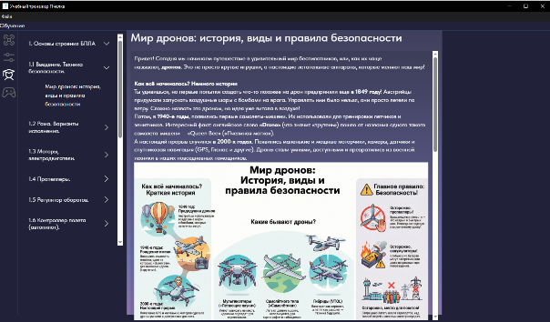
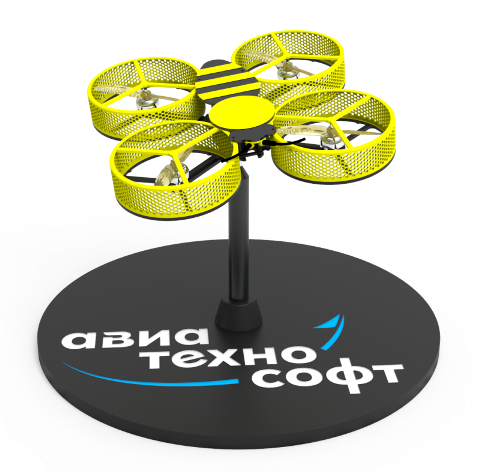
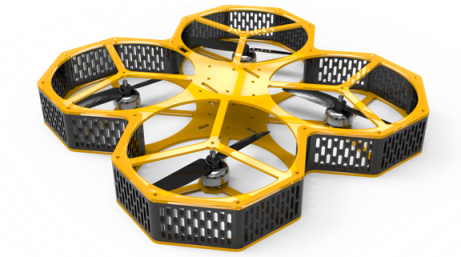
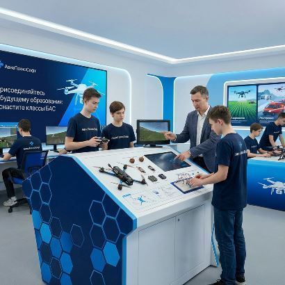

Учебный тренажер
Учебный программно-технический комплекс пилотирования БПЛА предназначен для обучения школьников основам строения и пилотирования беспилотных авиационных систем мультироторного типа.
Комплекс предоставляет возможность проводить уроки не профильным преподавателям, используя интуитивно понятный программно-методический интерфейс.


Этот тренажер разработан специально для обучения детей пилотированию в школах и кружках. Он позволяет проводить уроки в любом обычном классе, без сложной подготовки и дополнительного оборудования.
Как это работает?
Учебный дрон крепится на специальное устройство, которое позволяет ему свободно наклоняться и поворачиваться во все стороны, как в настоящем полете. Тренажер подключается к компьютеру, и все движения дрона точно повторяются в программе-симуляторе. При этом сам квадрокоптер никуда не улетает, оставаясь на месте.
Безопасность — на первом месте
Главное преимущество этого решения — полная безопасность. Ученики могут спокойно учиться управлять дроном, не боясь, что он врежется в стену,
упадет или кого-то заденет. Это позволяет новичкам уверенно отрабатывать любые маневры, от простого взлета до сложных фигур,
в спокойной обстановке.
Дрон-конструктор

Учебный дрон-конструктор, разработанный специально для образовательных целей. Этот 5-дюймовый дрон станет идеальным инструментом для погружения в мир беспилотных технологий.
Рама квадрокоптера состоит из нескольких простых деталей, что делает процесс сборки интуитивно понятным и быстрым. Встроенная защита пропеллеров обеспечивает высокий уровень безопасности во время учебных полетов, минимизируя риск травм и повреждений.
Три сценария использования
1. Конструктор - Набор идеально подходит для обучения основам сборки и настройки дронов. Учащиеся могут самостоятельно собрать и подготовить квадрокоптер к полету.
2. Учебные полеты - Благодаря своей безопасности и компактным размерам, дрон отлично подходит для тренировочных полетов в помещении, позволяя отрабатывать базовые навыки пилотирования.
3. Симулятор пилотирования - Дрон можно установить на специальный тренажер-шарнир. В этом режиме его движения (крен, тангаж и рысканье) синхронизируются с симулятором полета на компьютере. Квадрокоптер остается на месте, обеспечивая абсолютно безопасный опыт обучения, максимально приближенный к реальному.
Этот многофункциональный учебный дрон является превосходным решением для образовательных учреждений и кружков робототехники, предлагая комплексный подход к изучению беспилотных авиационных систем.
Вы можете купить дрон-конструктор на нашем сайте в розницу или заказать партию (со скидкой). Конструктор квадрокоптера можно купить через тендер, мы работаем с 44-ФЗ и 223-ФЗ.
Интерактивный стенд для сборки и настройки БПЛА
Освойте сборку квадрокоптеров с нуля с нашим новым образовательным стендом!
Он создан специально для того, чтобы в безопасной и понятной форме научить студентов практическим навыкам подключения и настройки всех ключевых компонентов современного дрона.
Чему вы научитесь:
Наш стенд — это настоящая практическая лаборатория. Вы сможете:
✔ Понять логику подключения моторов и регуляторов оборотов, научившись настраивать правильное направление их вращения.
✔ Разобраться в подключении FPV-системы: от камеры до видеопередатчика (VTX) и полетного контроллера.
✔ Научиться правильно подключать приемник аппаратуры радиоуправления к полетному контроллеру, используя UART-порты.
✔ Получить навыки диагностики и исправления ошибок в подключении, что является ключевым умением для любого специалиста по БПЛА.
Интуитивно понятный интерфейс и мгновенная проверка:
Мы убрали все сложности, оставив только суть.
Студент выполняет все подключения с помощью безопасных перемычек на наглядной схеме, имитирующей реальный дрон.
Нажали кнопку "Проверка"? Стенд тут же даст обратную связь:
- Моторы начнут вращаться на малых оборотах для визуальной оценки.
- Светодиодные индикаторы загорятся зеленым или красным, показывая правильность сборки.
- На мониторе появится изображение с FPV-камеры, если вы все подключили верно.
Весь процесс абсолютно безопасен — даже при ошибке повредить компоненты невозможно, так как стенд лишь симулирует подключение, а умная система контролирует правильность ваших действий.
Это идеальное решение для школ, колледжей и кружков робототехники, чтобы сделать обучение миру БПЛА наглядным, интересным и эффективным.
Для образования
Присоединяйтесь к будущему образования: оснастите классы БАС
Приглашаем образовательные учреждения к сотрудничеству для оснащения классов по Приказу Минпросвещения России от 28.11.2024 N 838. Мы предлагаем учебные и образовательные конструкторы дронов и квадрокоптеров, которые являются идеальным оборудованием для школы или кружка по робототехнике. В современном мире БПЛА (дрон, квадрокоптер) стали неотъемлемой частью многих отраслей. Наши учебные конструкторы позволяют студентам получить практические навыки в работе с беспилотными авиационными системами (БАС), открывая новые профессиональные горизонты. Не упустите возможность инноваций — станьте нашим партнером и сделайте шаг к созданию передовой образовательной среды с нашими учебными квадрокоптерами.
Свяжитесь с нами прямо сейчас, чтобы узнать подробности и начать сотрудничество.

О компании
Наша компания, команда инженеров, специализируется на создании передовых образовательных решений в сфере беспилотных технологий. Мы разрабатываем и производим учебные конструкторы дронов и квадрокоптеров,
а также комплексные тренажеры для пилотирования БПЛА. Наша продукция — это современное оборудование для школы и специализированных кружков, идеально подходящее для оснащения классов по Приказу
Минпросвещения России от 28.11.2024 N 838. Мы предлагаем готовые инженерные решения и программно-технические комплексы, которые помогут вам эффективно решать сложные задачи в области беспилотных
летательных аппаратов. Свяжитесь с нами, чтобы обсудить ваш проект.
«Наш комплекс — это единственное решение, позволяющее проводить уроки пилотирования в обычном классе без спецоборудования. Мы сознательно делаем продукты, которые снимают барьеры для массового внедрения
БАС в школы: безопасность, простота для непрофильных педагогов и методическая поддержка. Именно этот подход к доступности образования, а не сама технология, отличает нас от конкурентов».
Контакты
- Email: aviatechnosoft@yandex.ru
- Телефон: 8-987-499-74-97